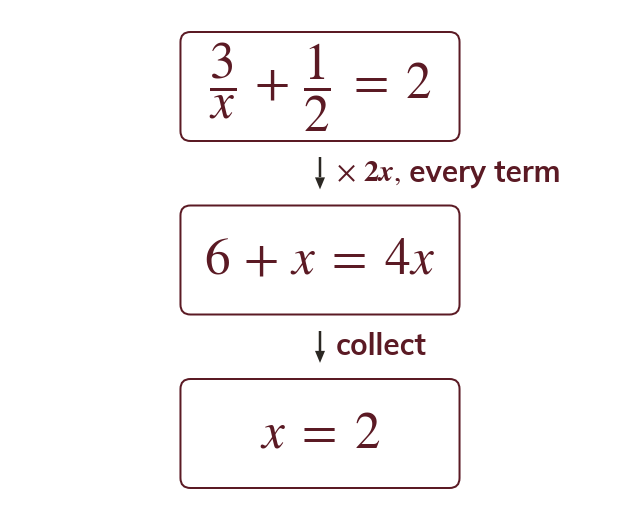
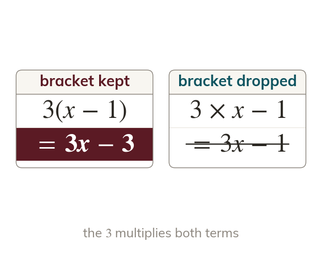
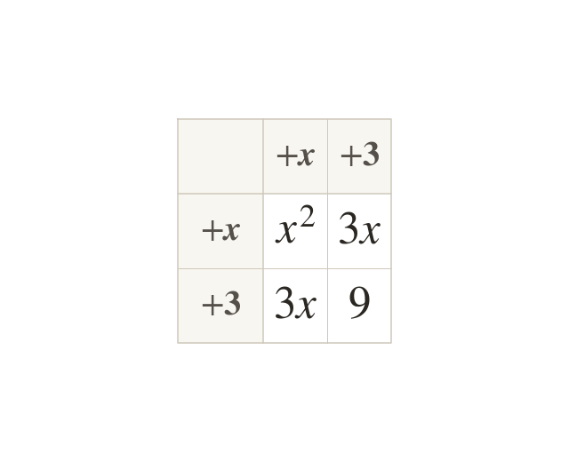
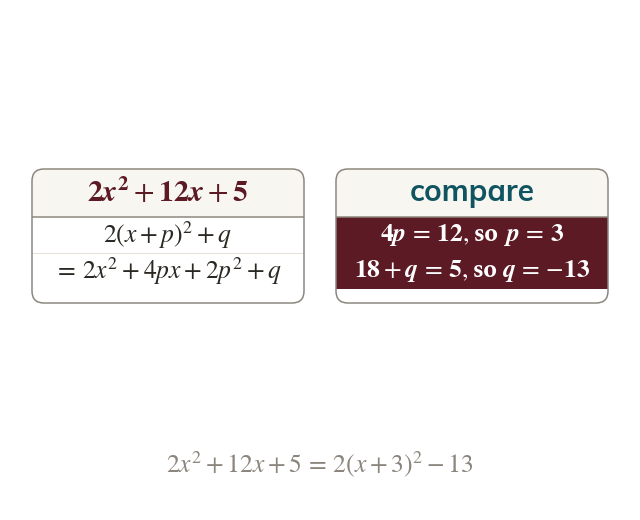

Clear every denominator
Every term is multiplied by the LCM of the denominators. A whole number on its own is multiplied too.
Clearing the fractions turns a frightening equation into an ordinary one, and completing the square rewrites any quadratic so its turning point can be read straight off - the form the next two chapters use to sketch a curve and to solve.
Work down the page at your own pace. Write every answer in your book first, then click to check it.
Read each card, then follow the worked examples one step at a time.

Every term is multiplied by the LCM of the denominators. A whole number on its own is multiplied too.

A numerator with two terms is bracketed when it is multiplied. So is
Pick an answer. If it's wrong, the feedback tells you which mistake it was.
Section Solving linear equations involving fractions : equations with one or more algebraic fractions, including letters in the denominators.
Read each card, then follow the worked examples one step at a time.

The square completes as
For the grid shows the extra to take away.

Expanding and comparing coefficients finds and This works when a is not
Pick an answer. If it's wrong, the feedback tells you which mistake it was.
Section Completing the square : unit and non-unit leading coefficients, and quadratics written in reverse order.
Finished? Next lesson: 3.1-3.2 Functions, Domain and Range.
For each skill, tap the one that is true for you today. Your Revise pages start with anything you mark Not yet.
Your ratings are saved on this device only.
Log in, then search for a code to practise that skill.